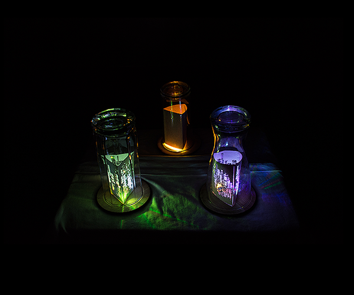
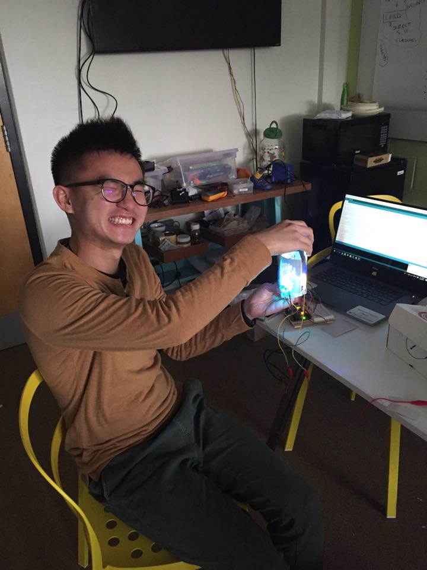

Glimpse
Visualizing fear, motivation, and goal

ABOUT GLIMPSE
Glimpse is a display visualizing people's "fear drive", which is something that causes people fear yet motivates them to achieve certain goals. Through Glimpse, I envision a small and aesthetically pleasing light devise on people's night stands. I aim to provoke people to contemplate about their "fear drives".
This project started from a personal discovery of my own "fear drive". Combined with my desire of learning more about experimental design, I started this side project investigating "fear drive" through designing for it.
Read more about Glimpse by clicking the installation intro below!
INSTALLATION
I installed Glimpse at a public room in my department building. People were welcomed to come in and view Glimpse as they pleased. I was present for the entire installation to gather feedback and to answer viewers' questions. Overall, viewers showed great interest in Glimpse and would like to have one in their own room.
Pictures below show the installation of Glimpse as well as audiences' interactions with it.
DESIGN PROCESS HIGHLIGHT
The entire process of conception, research, and implementation took about 4 months. Below is a very brief highlight of the process! Contact me to learn more!
Selected conception sketches
Research highlight - interviewing
I conceptualized Glimpse by interviewing people. After interviewing several people, I realized there is a pattern of "fear", "motivation", and "goal" in people's "fear drive". Thus, I decided to manifest these three aspects.
Prototype 1
I started by experimenting with different material of paper with simple diffused LED
Prototype 2
I then experimented with different text treatment, glass shapes, etc.
Prototype 3
Finally, I set all the glasses together and experimented with positions and light interaction
Reflecting Forward
Conceptualization // Embrace Ambiguity // Design // Installation // Pondering
This project nicely combined my philosophy background as well as my design background. From this project, I have learned to think by doing, even if that question is as complex as human nature. By designing Glimpse, I really feel that I have understand my "fear drive" a lot more, and I really look forward to scale up this project in this near future! I am in the process of planning a long-term study with Glimpse - I wonder, what would happen if people put Glimpse in their own room? What thoughts would be evoked if one can visually see their own fear drive constantly?
Behind the scene - me and my prototype baby!
